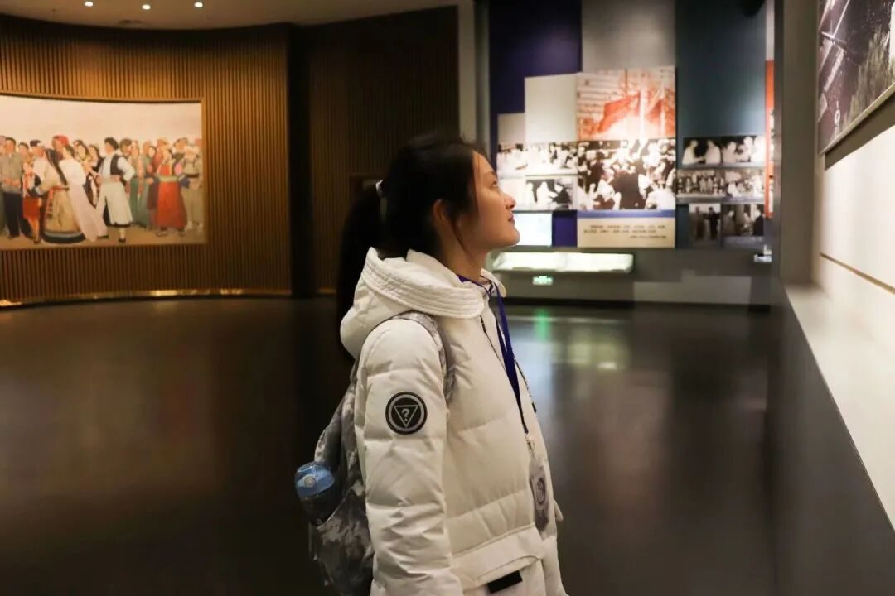
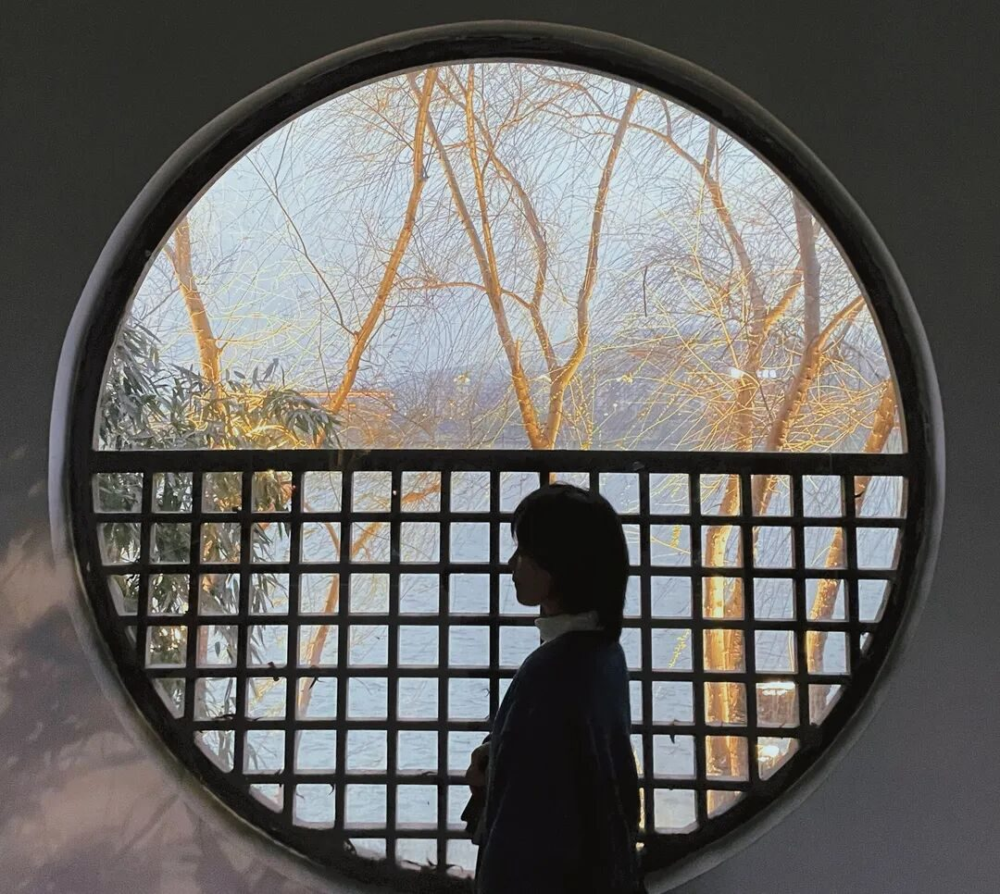
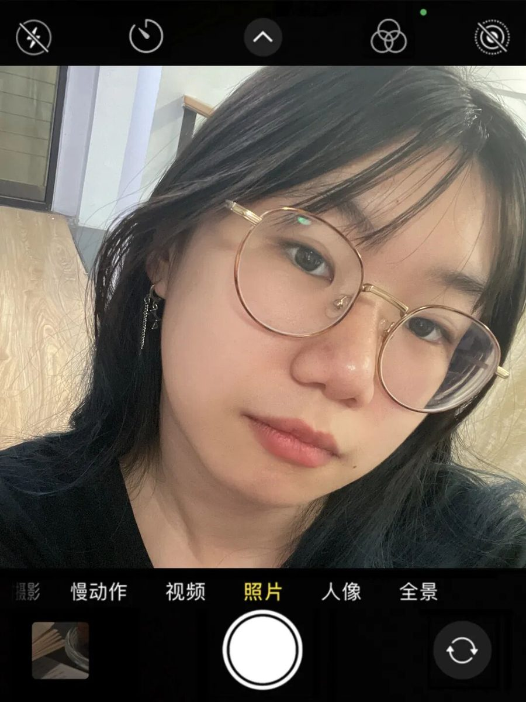
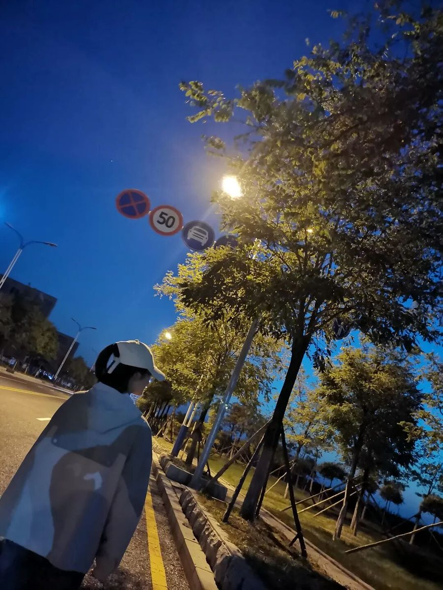
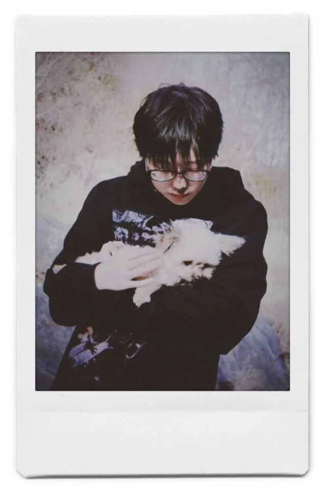
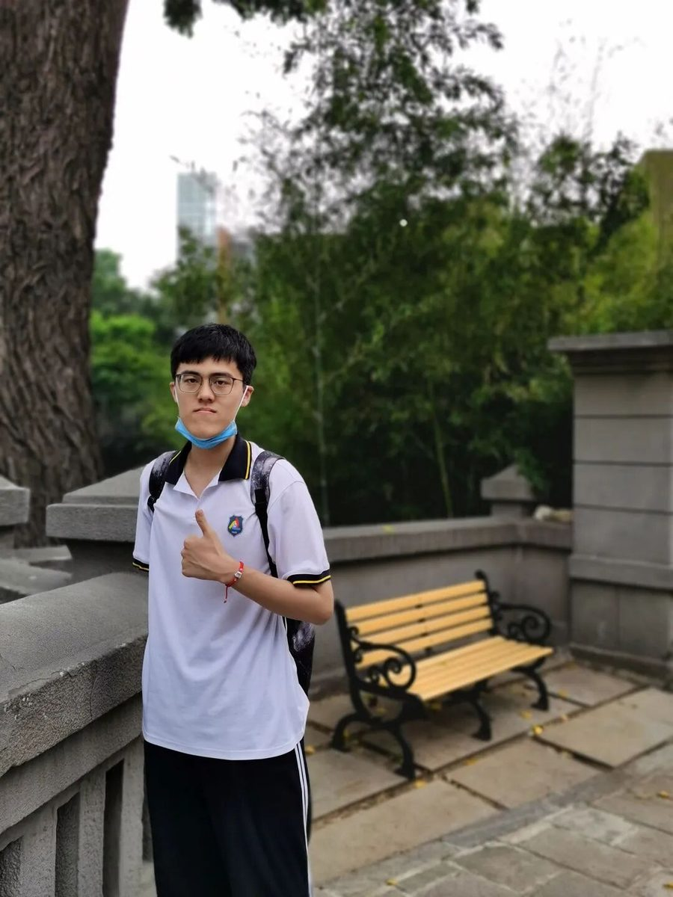

【行者无疆 寓绻淮扬】 行者篇

诸位行者
踏万里山海赴文化宴
探绿树城郭访广陵郡
文溯齐鲁
知遇中原
致旅吴越
拾遗皖徽
韶忆长安
源洄渝州
言念潇湘
聆谂丝韵
江山如画，波澜壮阔
记载了行者们的步步足迹
不畏盛夏烈阳
行者们即将踏上新的征途
第九期行者无疆来了！
了解社会需求，锻炼自身本领。
明确发展方向，实现人生价值。

未必光芒万丈，
也要温暖有光
孙健
不念过往 不畏将来
杨佳
胡心怡
“桃李春风一杯酒，
江湖夜雨十年灯”
高懿玢
我鞭长莫及，也马不停蹄
李驰瑞

就让这 大风吹
大风吹 一直吹
摄影组：陈颖

林嘉欣

我有了敢于入世的心胆，去承担人世的苦乐悲欢
杨静

赵庭芳
沿途的风景比终点更精彩
财务组：曹祺璇
生活明朗，万物可爱
人间值得，未来可期
汪浩晴

徐彦博

名为人生的浪潮，
如我这般的冲浪者
于金奥
后勤组：
朱华伟
我虽行过死荫的幽谷也不怕遭害
温兆琪
张雅妮
All will be the best
美工组：谷镓良
飞天与万佛隐入胡云
白雁伴羌笛
长河共落日没入黄沙
等风来
不如追风去
山有扶苏，隰有荷华
维士与女，伊其将谑
与君同往，寓绻淮扬
来源 | 行者无疆实践团
文字 | 行者无疆实践团
排版 | 林嘉欣
审核 | 付媛 吕丰元 温兆琪
行者无疆实践团
QQ：2758025831

随行者一起认识世界
长按二维码